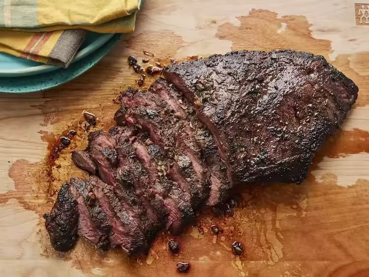

Perfect Flat Iron Steak
This delicious flat iron steak recipe was created from a combination of different recipes and was sourced from allrecipes.com.
Recipe by Cocina JNOTS
Ingredients
- 1 (2 pound) flat iron steak
- 2 1/2 tablespoons olive oil
- 2 cloves garlic, minced
- 1 teaspoon chopped fresh parsley
- 1/4 teaspoon chopped fresh rosemary
- 1/2 teaspoon chopped fresh chives
- 1/4 cup Cabernet Sauvignon (or other dry red wine)
- 1/2 teaspoon salt
- 3/4 teaspoon ground black pepper
- 1/4 teaspoon dry mustard powder
Instructions
- Place the steak inside of a large resealable bag.
- In a small bowl, stir together the olive oil, garlic, parsley, rosemary, chives, red wine, salt, pepper and mustard powder.
- Pour over the steak in the bag. Press out as much air as you can and seal the bag.
- Marinate in the refrigerator for 2 to 3 hours.
- Heat a nonstick skillet over medium-high heat
- Sear and cook the steak in the hot skillet for 3 to 4 minutes on each side for medium rare, or to your desired degree of doneness.
- Discard the marinade.
- Allow the steaks to rest for about 5 minutes before serving.